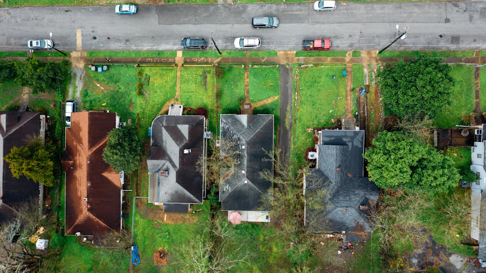
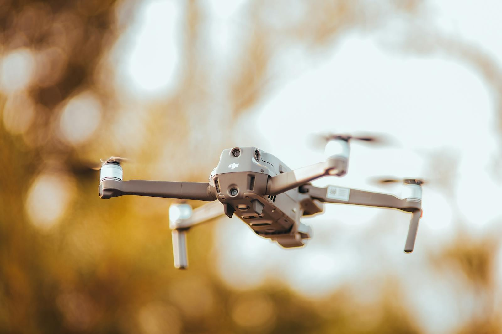
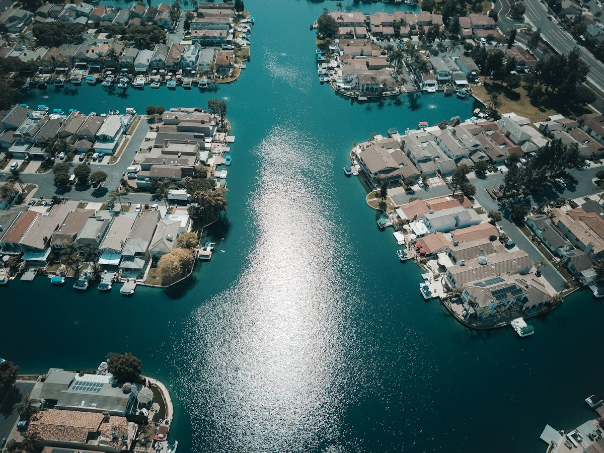
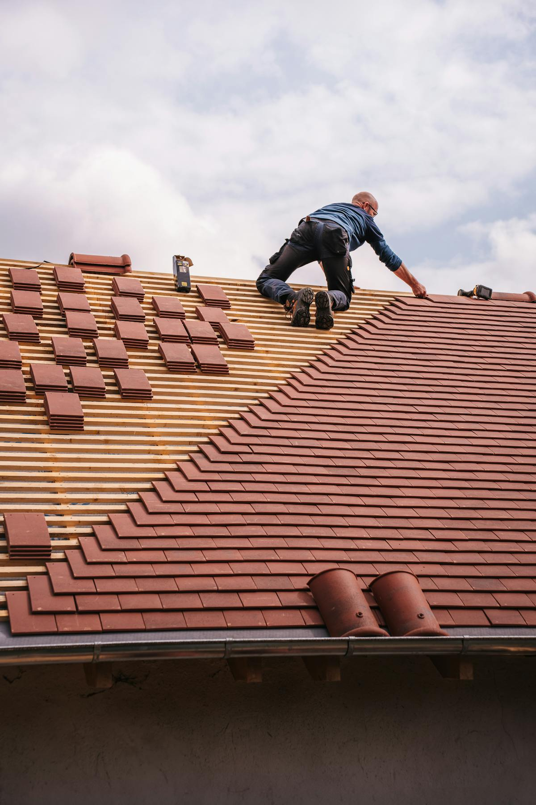

Drone Roof Inspections
Document roof conditions quickly and safely with high-resolution aerial imaging for homes, commercial buildings, and storm-affected properties.
Mississippi Gulf Coast Drone Services
Fast, reliable aerial services for roofing, real estate, insurance documentation, and property evaluations—without the risk of climbing.

Kaptsure provides inspection-ready visuals for contractors, agents, adjusters, homeowners, and property owners.

Document roof conditions quickly and safely with high-resolution aerial imaging for homes, commercial buildings, and storm-affected properties.

Showcase listings, land, waterfront access, neighborhood context, and property scale with polished aerial photos and video.

Capture clear condition records for adjusters, homeowners, contractors, and property owners after storms or property damage.

Professional aerial views for coastal, waterfront, rural, and commercial properties across the Mississippi Gulf Coast.
Why Kaptsure

Kaptsure combines drone technology with real-world experience in real estate, roofing, and property services. We don’t just take pictures—we deliver aerial data that helps clients make decisions, document conditions, close deals, and reduce risk.